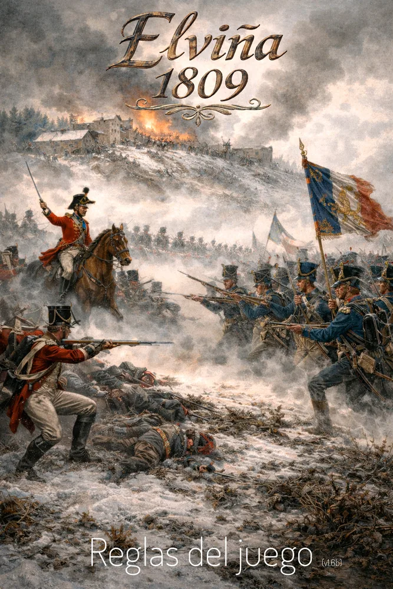
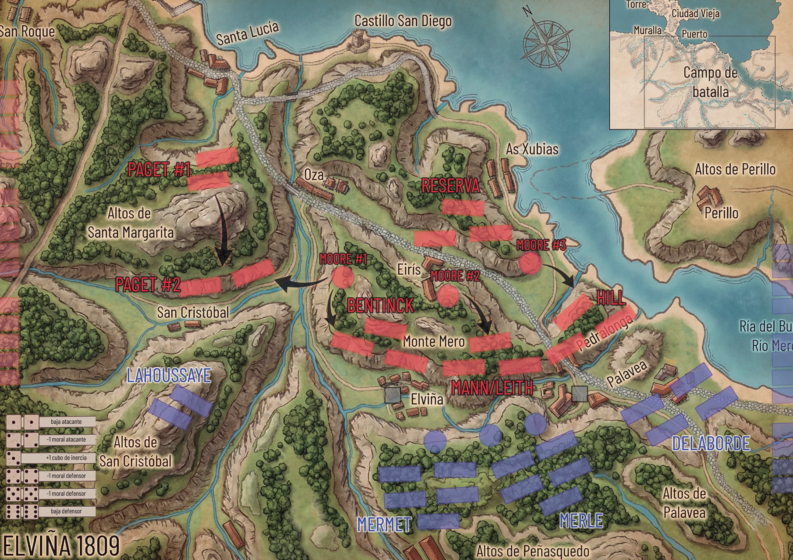
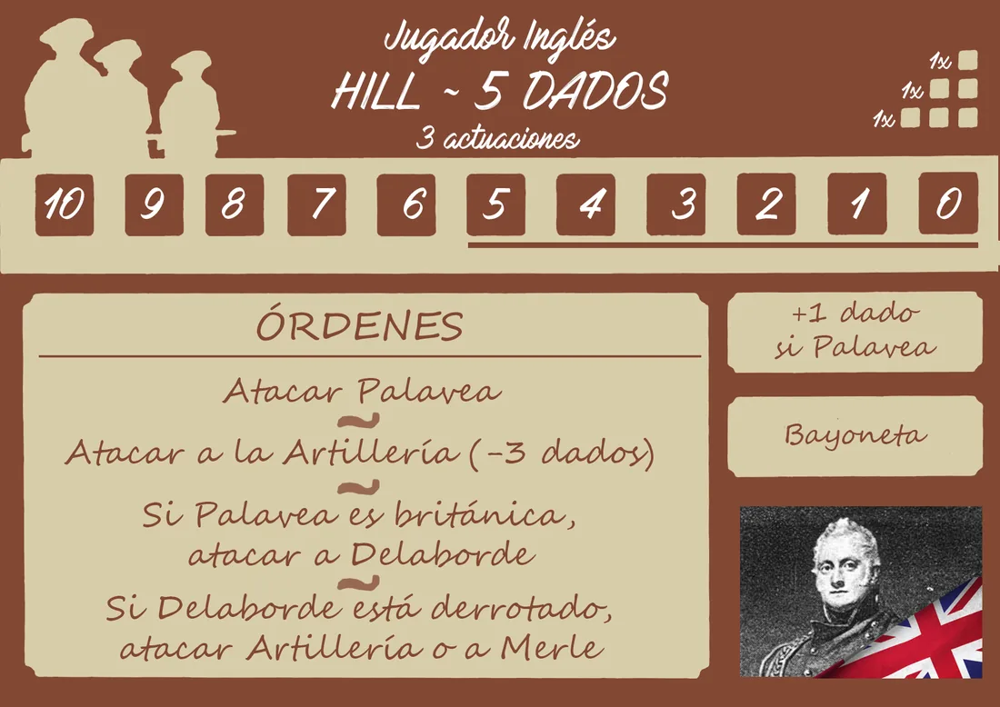
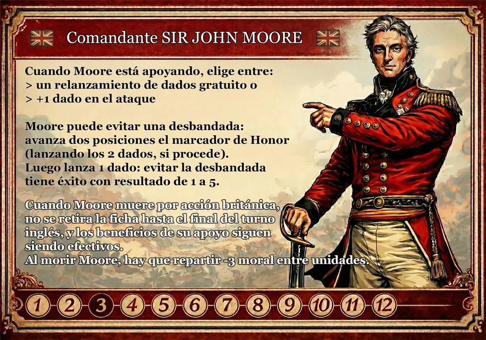
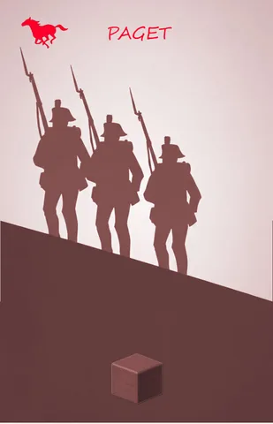
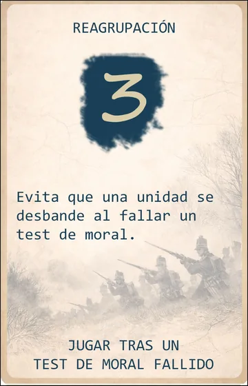

Reglas e historia · v1.6c
Elviña 1809
Texto del reglamento del diseñador. Las aclaraciones confirmadas para la versión digital están al final.
1. Introducción
Es 16 de enero de 1809. De la fuerza expedicionaria inicial de 35.000 soldados, enviada a intervenir en la Guerra de la Independencia Española, ya sólo quedan 14.000. Las maltrechas tropas británicas se encuentran a punto de culminar su retirada, en las inmediaciones del puerto de A Coruña.
Los barcos de la Real Armada Británica están dispuestos para la evacuación, pero las tropas al mando del general Sir John Moore, desplegadas en el llano de Elviña, todavía deben encarar la batalla final contra el ejército enemigo que los lleva persiguiendo sin descanso desde hace meses: los 20.000 soldados franceses al mando del mariscal Nicolas Jean de Dieu Soult.
Es la hora de la verdad.
2. Resumen de componentes
- Tablero de juego
- Franceses: 16 bloques, 6 cubos y 3 discos azules.
- Británicos: 15 bloques, 7 cubos y 1 disco rojo.
- Inercia: 25 cubos negros.
- Tarjetas de Unidad: 6 británicas y 6 francesas.
- Cartas de Acción: 15 británicas y 15 francesas.
- Cartas de Táctica: 36.
- Dados.
3. Componentes del juego
3.1. Tablero de juego

El tablero representa el campo de batalla y las posiciones aproximadas de las formaciones francesas y británicas. Cada Unidad tiene el nombre de su comandante (excepto “Artillería” y “Reserva”) y sus tropas se representan con marcadores de madera de dos formas: bloques para infantería y caballería, y discos para la artillería y el general Moore.
Las posiciones de las tropas son estáticas, exceptuando Paget y Moore.
Existen dos localizaciones clave en el tablero: Elviña y Palavea. El control de estas plazas se representa con un cubo del color (rojo o azul) del bando que las ocupa. Controlar estas posiciones influye enormemente en las acciones que las tropas pueden llevar a cabo, y marca el devenir de la batalla.
3.2. Tarjetas de División y comandante


Cada bando (británico y francés) dispone de una serie de tarjetas que se corresponden con las Unidades presentes en el tablero de juego. Estas tarjetas contienen la siguiente información:
- Listan una serie de órdenes que cada Unidad puede cumplir cuando es activada a través de las cartas de Acción.
- Indican cuántos dados se lanzan en Combate y qué modificadores se aplican en base a las circunstancias actuales de la batalla.
- Indican el número de activaciones disponibles y el listado de las distintas cartas de Acción disponibles en el mazo.
Las tarjetas presentan una pista de Moral/Cohesión sobre la que se usará un cubo marcador. Los valores por debajo del 6 están destacados porque implican Comprobación de Moral/Cohesión (ver más adelante).
Las tarjetas de los comandantes y la de la Reserva británica son ligeramente distintas. La de Moore incluye su particular “Senda del Sacrificio” con resultados destacados del 3 al 12, la Reserva inglesa no tiene pista de Moral y la tarjeta de Soult incluye iconos de cubos de Inercia de Combate.
3.3. Cartas de Acción

Cada bando dispone de su propio mazo de 15 cartas de Acción.
Cuando se juega una de ellas, se activa la Unidad correspondiente. Además, se obtienen tantos cubos de Inercia de Combate como indiquen los iconos de la parte inferior de la carta. Estos cubos se roban siempre de la reserva común y se añaden a la reserva del jugador.
Una carta de Acción relativa a una Unidad que haya sido destruida o desbandada (eliminada del juego) sigue proporcionando cubos de Inercia (y la bonificación correspondiente, si aplica) cuando se pone en juego, y cuenta como carta de Acción jugada en el turno.
Es posible elegir la carta de Acción a robar del mazo si se devuelven 5 cubos de Inercia a la reserva común, siempre que esté presente (no haya sido jugada y descartada previamente). Tras robar la carta elegida, se baraja el mazo.
3.4. Cartas de Táctica

Se trata de un mazo compartido por ambos bandos que contiene 36 cartas de Táctica. Estas cartas se consiguen a cambio de devolver cubos de Inercia de Combate a la reserva común desde la de cada jugador.
Una vez compradas, se mantendrán boca arriba en la zona de juego del jugador correspondiente.
Son de uso único a menos que la carta indique “PERMANENTE”.
Cada carta indica su coste, su efecto y el momento en el que puede (o debe) ser jugada.
Se puede poner en juego cualquier cantidad de cartas siempre y cuando sea el momento indicado, pero sólo se puede adquirir una carta de Táctica por turno.
Un jugador puede descartar 3 cartas de Táctica en cualquier momento para obtener 3 cubos de inercia de la reserva común.
3.5. Marcadores de tropas
Las tropas que forman las distintas Divisiones están representadas por bloques de madera. Se colocan en los lugares indicados en el tablero: azul para los franceses y rojo para los británicos. Paget y Moore se colocan en sus respectivas posiciones marcadas como #1. Tanto la Artillería francesa como sir John Moore están representados con discos de madera. Cualquier Unidad que se quede sin marcadores en el tablero se considera destruida, con la excepción de la Reserva británica (que puede quedarse sin piezas y no cuenta como eliminada a efectos del objetivo del juego). Si Moore es abatido, y aunque se retire su ficha del tablero, no cuenta como Unidad destruida.
Una vez que una Unidad es destruida/desbandada, no se puede reorganizar de ninguna manera, ni siquiera añadiendo refuerzos a sus posiciones.
Cada vez que un marcador de tropa o artillería (bloque de madera o disco) es destruido o retirado por cualquier motivo, se le entrega al jugador rival para que éste lo coloque en el correspondiente marcador de bajas general del tablero. Esto puede bonificar al rival que recibe la ficha con cubos de Inercia extra al superar ciertos umbrales del marcador.
- Francés:
- 1 cubo al alcanzar o superar las 5 primeras bajas inglesas.
- 2 cubos con las 10 bajas.
- Inglés:
- 1 cubo al alcanzar o superar las 4 primeras bajas francesas.
- 2 cubos con las 8 bajas.
- 3 cubos con 12 o más.
Los cubos de color asignados a Elviña y Palavea representan el control de estas plazas clave. Cuando cambian de manos, se sustituye el color del cubo presente en la localización por el correspondiente. Esto puede ocurrir cualquier número de veces a lo largo de la partida.
Comienzan la partida bajo control británico (cubos rojos).
4. Objetivo del juego y condiciones de victoria
El bando británico intentará defender sus posiciones y sobrevivir durante 15 turnos para dar tiempo al embarque de sus tropas y su evacuación al Reino Unido. También podría lograr que el bando francés desista si logra infligir las suficientes bajas.
El bando francés intentará romper la defensa dispuesta por el General Moore y evitar la evacuación de las tropas británicas.
En consecuencia, ganará la partida el jugador que logre eliminar 2 Divisiones del bando contrario, bien porque éstas se desbandan o bien porque resultan destruidas.
Si ambos jugadores se quedan sin cartas de Acción en la mano (normalmente tras 15 rondas de juego), ganará el jugador inglés (evacuación exitosa).
5. Preparación de la partida
- Los jugadores escogen bando: marcadores, tarjetas y cartas rojos para el jugador británico y azules para el francés.
- Cada jugador dispone en su zona de juego sus distintas tarjetas de Unidad y coloca un cubo de su color en la posición inicial de las tarjetas, con la Moral al máximo. La tarjeta de Moore comienza la Senda del Sacrificio en el mínimo.
- Se colocan todas las piezas en el tablero de juego en las posiciones indicadas (Paget y Moore en #1). Elviña y Palavea están bajo control inglés.
- Cada jugador baraja su mazo de Acción: el jugador inglés roba 5 cartas y el francés roba 6. De éstas, cada bando elige 3 cartas para formar su mano inicial (siempre oculta al adversario). Se devuelven las cartas no seleccionadas a su mazo, se vuelven a barajar y se disponen boca abajo.
- Se baraja el mazo de Táctica y se roban 3 cartas boca arriba formando una fila al alcance de ambos jugadores, llamémosla Mercado de Táctica. Se deja el mazo al lado boca abajo, dejando algo de espacio para los descartes.
- Todos los cubos de Inercia de Combate (negros) se disponen a un lado formando la reserva común. Cada jugador roba 2 cubos de Inercia para su suministro personal.
6. Secuencia de juego
Se jugarán aproximadamente 15 rondas en la partida, y en cada una de ellas, un turno por cada bando. Siempre empieza la partida el jugador francés.
Los turnos se van alternando hasta que se da una de las condiciones de victoria.
6.1. Fases del turno
Cada turno se desarrolla en 3 fases:
- 1. Planificación. Cada jugador deberá:
- a. Poner en juego una carta de Acción de su mano, o hacer uso de la habilidad del Mariscal Soult (sólo el jugador francés).
- b. Robar los cubos de Inercia indicados por la carta (o tarjeta de Mariscal), que pasan a formar parte de la reserva del jugador, y están inmediatamente disponibles para su uso.
- c. Opcionalmente, el jugador inglés puede desplazar a Sir John Moore en este momento.
- d. Se paga el coste de activación de la Unidad seleccionada, reduciendo en 1 la Moral/Cohesión en su tarjeta o bien retirando uno de sus indicadores de tropa del tablero.
- 2. Combate. Se divide en dos pasos:
- a. Comprobar la desbandada. Si el cubo indicador de Moral de la tropa se ha movido a una casilla dentro del rango de retirada potencial, se debe efectuar una tirada de comprobación para entrar en combate. Si no se supera dicha tirada, la Unidad se desbanda: sus marcadores se retiran del tablero y la fase de Combate finaliza (ver 6.3.1).
- b. Ataque. Se elige una de las órdenes disponibles de la tarjeta de la Unidad y se lleva a cabo la acción de Combate (ver más adelante).
- 3. Reorganización y repliegue.
- a. Opcionalmente, el jugador puede adquirir una carta de Táctica pagando su coste en cubos de Inercia. Si lo hace, y tras pagar el coste, obtendrá también los cubos de Inercia que estuviesen colocados sobre ella. Si no puede o no quiere hacerlo, la carta situada más a la derecha del Mercado de Táctica será descartada. Cualquiera de los dos jugadores, empezando por el jugador que no juega su turno, tiene la oportunidad de evitar el descarte (ver más abajo). Si se ha generado un hueco, bien sea por la compra de una carta o por su descarte, se desplazan las cartas de izquierda a derecha para llenarlo y, finalmente, se roba una nueva carta del mazo boca arriba para ocupar la posición más a la izquierda, y completar la hilera de 3 cartas.
- b. Si su mazo no está agotado todavía, el jugador roba una carta de Acción para acabar el turno con 3 cartas en la mano. También es posible elegir la carta de Acción a robar del mazo si se devuelven 5 cubos de Inercia a la reserva común, siempre que esté presente (no haya sido jugada y descartada previamente). Tras esto, el mazo de Acción se baraja.
Opcionalmente, en cualquier momento del turno (a veces incluso en el turno de otro jugador) se pueden jugar cartas de Táctica si su texto indica que es el instante adecuado.
6.1.1. Combate. Lanzar los dados
Cada Unidad lanza un número distinto de dados, dependiendo del objetivo elegido, la situación actual de la batalla, la influencia de Moore y las cartas de Táctica que se jueguen, tal y como viene descrito en la tarjeta de cada una.
Los resultados del Combate se aplican sobre las tropas atacante y defensora seleccionadas, excepto cuando se atacan las plazas de Elviña o Palavea (ver más adelante).
Se busca obtener parejas de dados:
- Pareja de unos: el atacante sufre una baja (retira un marcador de tropa del tablero).
- Pareja de doses: el atacante reduce su moral en 1.
- Cada tres obtenido: el atacante gana un cubo de Inercia de Combate.
- Pareja de cuatros: el defensor reduce su moral en 1.
- Pareja de cincos: el defensor reduce su moral en 1.
- Pareja de seises: el defensor sufre una baja (retira un marcador de tropa del tablero).
Aplica el efecto correspondiente una vez por cada pareja completa que hayas formado. Cualquier dado sobrante que no pueda formar una pareja con otro idéntico no tiene efecto por sí solo (exceptuando los treses).
Algunas cartas de Táctica afectan al Combate de diversas formas. También algunas Unidades tienen la capacidad “Bayoneta”, que permite modificar el resultado de los dados. Si, como resultado de un Combate, se produce una desbandada “simultánea” de atacante y defensor, y esto hace cumplir las condiciones de victoria para ambos bandos a la vez, se considera que el bando atacante gana la partida.
6.1.2. Inercia de Combate. Relanzamiento de dados
Tras cada lanzamiento de dados está permitido relanzar algunos de ellos, o incluso todos. Cada relanzamiento tiene un coste, a elegir entre:
- Devolver 3 cubos de Inercia de Combate a la reserva común.
- Reducir en 1 la Moral/Cohesión de la Unidad activa o retirar uno de sus marcadores de tropa del tablero. Esto podría implicar la eliminación de la Unidad correspondiente y la interrupción del Combate en curso. En cualquier caso, se debe aplicar el último resultado obtenido.
6.1.3. Evitar el descarte de Tácticas
Si el jugador activo no adquiere ninguna carta de Táctica, la carta colocada más a la derecha del Mercado de Táctica se descartará, a menos que alguno de los jugadores lo evite.
Empezando por el que no está jugando el turno actualmente, cada jugador tiene la oportunidad de evitar el descarte:
- Si es el jugador inactivo el que lo hace, deberá colocar 1 cubo de Inercia sobre cada carta de la fila excepto la situada más a la derecha, tomándolos para este propósito del suministro general.
- Si el jugador inactivo declara que no quiere hacerlo, será el jugador que está jugando el turno el que decidirá si quiere evitar el descarte. Para ello, deberá pagar con 1 cubo de Inercia de su suministro que irá a parar al suministro general.
Si ninguno de los jugadores lo evita, la carta se descarta, el resto se desplazan hacia la derecha y se rellena el hueco a la izquierda robando una carta del mazo boca arriba.
6.2. Habilidades de los comandantes
6.2.1. Tarjeta de comandante británico Sir John Moore
El general británico otorga beneficios a la Unidad que se encuentra en su zona de influencia. Moore puede elegir entre distintas posiciones, numeradas del 1 al 3, para influenciar positivamente a la tropa que deseada:
- Moore #1: Paget y Bentinck.
- Moore #2: Manningham / Leith
- Moore #3: Hill
A la hora de aplicar un beneficio a la Unidad, el jugador podrá elegir una de las siguientes opciones:
- Añadir 1 dado más en el combate.
- Realizar 1 relanzamiento gratuito (sin coste de Moral, Iniciativa o Tropas).
- Arengar a las tropas para evitar una desbandada (implica avanzar el cubo de la
Senda del Sacrificio).
El desplazamiento es siempre opcional, pero si no tenemos al General Moore en la zona de Influencia de la unidad seleccionada no podremos aplicar las ventajas que su presencia ofrece.
Desplazar al General tiene un riesgo y puede acabar siendo herido en batalla, tal y como ocurrió en la realidad. Cada vez que queramos cambiar a Moore de posición, deberemos desplazar hacia la derecha el cubo blanco de su tarjeta sobre la Senda del Sacrificio. El número de pasos que avanzará el cubo dependerá del número de movimientos que Moore necesite para llegar de una posición a otra, de forma que pasar de la posición #1 a la #3 (o viceversa) cuenta como 2 movimientos, y el resto de combinaciones cuentan como 1.
Si el cubo acaba ocupando cualquier posición superior al número 2 de la Senda del Sacrificio al final de su movimiento, se deben lanzar 2 dados. Si la suma del resultado obtenido es inferior a la posición del marcador, Moore se considera abatido.
Algunas cartas de Acción muestran el icono de un caballo. Cuando se juega esa carta se podrá realizar 1 desplazamiento “gratuito” de Moore sin riesgo alguno (sin mover el cubo sobre la Senda del Sacrificio). Si el jugador inglés decide aprovechar para hacer un segundo movimiento, éste sí que desplazará el cubo y se aplicarán las reglas estándar.
El marcador de la Senda del Sacrificio puede avanzarse también -si el jugador inglés así lo decide- para arengar a las tropas e intentar evitar una desbandada debido a la pérdida de Moral. Si Moore es abatido antes de poder arengar a sus tropas, la División que iba a desbandarse se elimina de la partida.
Si Moore resulta abatido como consecuencia de alguna de estas dos acciones (originadas por el jugador británico), su ficha se retirará al final del turno inglés y se deberán repartir 3 puntos de pérdida de moral entre el conjunto de las tropas británicas. Hasta que la ficha de Moore no se retire, los efectos beneficiosos sobre las tropas en su área de influencia siguen aplicándose (excepto en el caso de un intento fallido de Arengar a las tropas).
Por el contrario, si resulta abatido por acción de la Artillería francesa, su ficha se retira inmediatamente y se aplica la pérdida de Moral correspondiente.
Moore no cuenta como unidad eliminada de cara al objetivo de la partida.
6.2.2. Tarjeta de mariscal francés Jean de Dieu Soult
El Mariscal Soult dispone de dos habilidades que puede ser utilizadas:
- Activar dos Unidades en el mismo turno, con la siguiente secuencia: ➢ El jugador francés selecciona 2 cartas de Acción (una por cada unidad a activar) ➢ Recibe únicamente 5 cubos de Inercia de Combate, independientemente del número de cubos que vengan indicados en las dos cartas de Acción que va a jugar. ➢ Recibe 2 dados adicionales para las tiradas de combate. Podrá utilizar los dos dados con la misma Unidad, o repartirlos entre ambas. ➢ El jugador pone en juego las cartas de Acción de una en una y de forma independiente (no puede sumar o bonificar los ataques de una carta con la otra). ➢ Tras las activaciones, el jugador francés elige una de las dos cartas de Acción jugadas y la devuelve a su mano, la otra se descarta normalmente (sin bonificación de Inercia, ver más adelante).
- Evitar que una unidad se desbande.
La habilidad del Mariscal Soult tiene un único uso, tras el cual se le da la vuelta a su carta. Sólo es posible hacer uso de una de las dos habilidades una vez.
6.3. Moral y refuerzos
6.3.1. Comprobación de Moral/Cohesión
Cada vez que se reduce en 1 la Moral de una División por debajo del 6, se debe tirar un dado para comprobar si las tropas se desbandan y huyen. Si el resultado de la tirada es superior al número que indica el marcador de Moral/Cohesión, la División queda eliminada de la partida, y se retiran sus piezas del tablero.
Los comandantes pueden evitar que una Unidad se desbande, siempre que su Moral sea superior a 0. Las unidades que alcanzan el 0 en su marcador de Moral son eliminadas automáticamente, sin posibilidad de salvación.
Si la Moral de una Unidad aumenta por cualquier efecto del juego, no se lleva a cabo esta comprobación.
6.3.2. Reforzando las tropas
Algunas órdenes de las tarjetas del bando inglés permiten reforzar otras Unidades en determinados casos. Cuando se refuerza una Unidad, se trasladan los marcadores de tropa de la posición de una a la otra.
Está permitido desintegrar una Unidad para reforzar otra, aunque esto hará que cuente como Unidad eliminada de cara al objetivo de la partida.
La Reserva inglesa puede quedarse sin marcadores y no cuenta como unidad eliminada.
6.4. Bonificaciones de Inercia de Combate
Se recomienda ir apilando las cartas de Acción que cada bando va jugando de manera que se puedan ver los cubos de Inercia de Combate que ha proporcionado cada una, aunque es importante tener en cuenta que la racha de Inercia se mantiene activa aunque las cartas jugadas sean retiradas de la mesa o barajadas.
En el momento en el que se juegue una carta que forme una secuencia de 3 cartas consecutivas con el mismo número de cubos de Inercia, se ganarán los cubos de Inercia indicados en una de las cartas del trío más una bonificación de 2 cubos.
Es posible formar hileras de cartas de más de 3 cartas con el mismo número de cubos, aunque sólo se obtiene la bonificación del último trío de la secuencia (2 cubos) en el momento de jugar cada carta.
La habilidad de Soult anula la bonificación en el turno en el que se utiliza, aunque se podría obtener este bonus en turnos posteriores de la manera habitual.
6.5. Localizaciones clave: Elviña y Palavea
Cualquier acción de Combate que vaya dirigida hacia Elviña o Palavea (la de la Artillería incluida) que ocasione al menos una baja en el defensor, servirá para cambiar el color del marcador del control de la localización en cuestión. Sólo se retiran marcadores de tropa del tablero a partir de la segunda baja infligida.
El bando defensor de Elviña puede elegir a qué Unidad aplicar las pérdidas de tropas y de Moral, o incluso repartirlas entre tropas:
- Bentinck y/o Manningham/Leith se reparten las pérdidas en el caso inglés.
- Merle y/o Mermet para el caso francés.
Los defensores de Palavea siempre son Hill o Delaborde, según el bando que la controle.
Controlar Elviña y/o Palavea implica diversos beneficios en la batalla, y permite atacar directamente a las tropas enemigas sin pasar por el trámite de cambiar el marcador de control.
Si Hill o Delaborde son eliminados por desbandada, Palavea pasa automáticamente a estar ocupada por el enemigo.
6.6. Sin objetivos disponibles
Si una Unidad es activada y no puede llevar a cabo ninguna de las acciones listadas en su tarjeta (porque todos sus objetivos potenciales se han desbandado o han sido destruidos, por ejemplo), el jugador recibe los cubos de Inercia indicados en la carta jugada pero no paga el coste de activación de la Unidad.
Además, recibe una bonificación de 2 cubos de Inercia adicionales.
7. Juego en solitario
Simplemente elige el bando con el que quieres jugar y dale la vuelta a las tarjetas de Unidad del bando contrario para dejar visible su versión en modo solitario.
Juega tu turno al igual que lo harías en una partida a dos, incluyendo todas las reglas descritas.
7.1. Diferencias con el modo multijugador
El oponente en el modo solitario no recibe ni hace uso de cubos de Inercia de Combate, ni adquiere o hace uso de cartas del Mercado de Táctica.
Nota: algunas cartas de Táctica no serán útiles contra el jugador automático: formarán parte del mazo y del Mercado igualmente.
El jugador automático no recibe una mano de cartas de Acción. Simplemente, su mazo de 15 cartas se baraja y se coloca boca abajo.
En su turno, voltea la carta superior de su mazo y ésa será la Unidad que el automa activará.
Las tarjetas de Unidad en modo solitario indican de forma ordenada por prioridad las distintas acciones que llevarán a cabo las tropas activadas: elige y ejecuta la primera opción jugable.
Por ejemplo, si la orden #1 de la Unidad activada no se puede llevar a cabo, se pasa a la #2. Si tampoco es factible, se prueba con la #3 y así consecutivamente. Si ninguna de las acciones se puede ejecutar o la Unidad ya no está presente en el tablero, el turno del automa pasa directamente a la fase de Mercado.
Si el jugador automático es el bando defensor de Elviña, aplica las pérdidas de tropas y de Moral en este orden de preferencia:
- primero Manningham/Leith, y Bentinck como segunda opción en el caso inglés.
- primero Merle, y Mermet como segunda opción para el caso francés.
El jugador automático utiliza la tabla del modo solitario para resolver las tiradas de dados de Combate: no necesita parejas de resultados, simplemente aplica lo indicado en la tabla. El único relanzamiento de dados se da con los treses, sin pagar ningún coste por ello.
El jugador humano no puede evitar ningún descarte del Mercado de Táctica: ni en su turno, ni en el del jugador automático.
Las bajas del jugador humano se entregan al jugador automático de la manera habitual aunque, en lugar de obtener cubos de Inercia, éste recupera puntos de Moral, priorizando la Unidad que menor Moral tenga en ese momento. En caso de empate, se decide al azar la Unidad que recupera puntos de Moral.
7.2. Secuencia de juego del solitario
Cuando le toca el turno al jugador automático:
- 1. Se juega una única carta de Acción volteándola desde su mazo.
- 2. Se paga el coste de activación reduciendo la Moral de la Unidad correspondiente.
- 3. Si la primera acción seleccionable de la tarjeta de la Unidad implica Combate, se lanzan los dados necesarios y se resuelven los resultados siguiendo la tabla del modo solitario.
- 4. Una vez aplicados los resultados, se elimina la carta de Táctica situada más a la derecha del Mercado y se devuelven los cubos de Inercia sobre ella al suministro, si los hubiera. Ningún descarte puede evitarse. Luego se rellena el hueco siguiendo las reglas estándar.
Los británicos siempre juegan el primer turno.
La partida continúa hasta que se hayan jugado todas las cartas de Acción, lo que marca el final.
7.3. Usando la carta de comandante en modo solitario
7.3.1. Soult solitario
El comandante francés previene la primera desbandada de una Unidad que falla una prueba de Moral, luego se descarta su tarjeta.
7.3.2. Moore solitario
Siempre que el jugador automático active una Unidad, Moore se desplaza inmediatamente a la posición apropiada para liderar el ataque de la misma.
Si Moore ya se encontraba allí, no ocurre nada (coste 0). Si debe moverse desde otro lugar, avanza 1 casilla su marcador en la Senda del Sacrificio (independientemente de la distancia) y realiza la tirada de riesgo habitual.
Mientras Moore esté en juego:
- 1. Añade +1 dado en ataque a las tiradas de la Unidad que bonifica su posición.
- 2. Si la unidad bonificada desde su posición debe desbandarse (incluso durante el turno francés), Moore intenta evitarlo: avanza 1 casilla en la Senda del Sacrificio. Si sobrevive a la tirada, la Unidad no se desbanda.
Nota: Si Moore resulta abatido, retíralo del juego. El jugador automático no pierde Moral por la muerte de su comandante.
7.4. Ganar en el modo solitario
Las condiciones de victoria son las mismas que en el modo multijugador.
8. Contexto histórico y notas de diseño
Resulta casi inevitable relacionar lo sucedido en la batalla de Elviña de 1809 con lo que pasó en Dunkerque aproximadamente 130 años después.
Salvando las diferencias de escala en el número de efectivos y que la nacionalidad del ejército perseguidor es distinta, el embarque a contrarreloj de decenas de miles de hombres exhaustos, al tiempo que el puerto que supone su salvación está siendo sitiado por el enemigo, nos hacen visualizar el mismo escenario de tensión y desesperación.
Es cierto que el recibimiento dado a los británicos en su regreso a casa fue muy distinto en ambas ocasiones. Y es probable que el comandante británico Sir John Moore, sabedor de lo que le esperaba, prefiriese el honor de la muerte en combate a la deshonrosa alternativa.
Otro punto importante es el vínculo directo de esta batalla con lo que sucederá en Waterloo tan solo 6 años después. La mayoría de sus protagonistas están presentes en A Coruña en 1809 o en la desastrosa campaña británica que culmina en su puerto aquel 16 de enero de 1809.
Moore recibe el mando de las tropas unos meses antes, relevando a Sir Arthur Wellesley (futuro duque de Wellington) y a los generales firmantes de Cintra. Napoleón en persona deja en manos del mariscal Soult (también presente en Waterloo) el mando del ejército perseguidor, cuando las circunstancias le obligan a retornar a Francia apresuradamente. Como guinda del pastel, Henry William Paget tiene el singular honor de ser otro de los actores presentes en ambos campos de batalla: el belga y el gallego.
Tras la derrota de las tropas francesas en la batalla de Vimeiro, las tropas expedicionarias británicas en España y Portugal quedan al mando de Sir John Moore. Sin embargo, la campaña militar que sigue a este momento está marcada por las privaciones y por las condiciones extremas que acabarán costando la vida de 6.000 soldados británicos. La retirada posterior, realizada durante un durísimo invierno, es un completo desastre: marchas agotadoras, temperaturas gélidas y escaramuzas casi diarias con la vanguardia de las tropas francesas son sólo algunos de los condicionantes que mermaron las fuerzas y la moral de los soldados británicos. Muchos de ellos acabaron cayendo en el alcoholismo y desertando.
La sorpresiva llegada a España de Napoleón en persona, acompañado de un enorme ejército, llevaron a Moore a tomar la decisión de retirarse hacia el puerto de A Coruña, en el noroeste.
Los pronósticos inmediatos son desoladores cuando las tropas inglesas alcanzan el puerto de A Coruña para descubrir que los buques de la “Royal Navy” todavía no han llegado. Así pues, los ingleses se ven forzados a desplegarse para bloquear el avance del enemigo. Soult, pese a haberse labrado la fama del “mejor maniobrero de Europa”, no hace honor a su título y peca de cauto en su avance, dejando tiempo de sobra a Moore para inspeccionar el terreno y preparar la mejor defensa posible.
El general inglés pronto advierte que el terreno accidentado en torno a la aldea de Elviña eliminará la ventaja de la caballería francesa, tan diferenciadora y determinante en la mayoría de combates de la época. Sin su propia caballería, cuyas monturas han sido sacrificadas o embarcadas, Moore confía la defensa enteramente a la disciplina de su infantería y a la frescura de su División de Reserva.
El 14 de enero los cien buques de la escuadra británica llegan a puerto y los ingleses pueden empezar a embarcar heridos. Se hace patente que deben hacer lo que esté en su mano para posibilitar la maniobra de retirada.
La tarde-noche del día 15 los franceses aún están empezando a desfilar hacia sus posiciones, emplazando su artillería y desplegándose, entre escaramuzas de las avanzadillas. La voladura del puente del Burgo, unido al respeto que la retaguardia inglesa se había ganado a pulso por parte del ejército galo en los numerosos encuentros durante la penosa retirada, hizo que Soult maniobrase con -quizá- demasiada prudencia en estas jornadas previas a la batalla.
De hecho, cuando llega el mediodía del 16, Moore da la orden de que comience el embarque del ejército, ante la posibilidad de que los franceses no inicien las hostilidades. Soult se despereza a las 14h y comienza su ataque. La reserva inglesa, camino de las naves, recibe orden de redirigir sus pasos -de nuevo- hacia posiciones de combate.
La aldea de Elviña es tomada varias veces por ambos bandos. Sus calles y viviendas se convierten en una carnicería y la mayoría de los combates se resuelven a golpe de bayoneta. Mientras intenta insuflar ánimo a sus hombres durante un nuevo avance inglés sobre la población, Moore resulta abatido y es transportado en una manta a la retaguardia. En el otro flanco, también se produce un continuo toma y daca en las cercanías de Palavea, pero la luz del día ya empieza a escasear y los franceses no han logrado avances decisivos. Moore muere a las 20h. Su tumba se cava con bayonetas.
Hope, ahora al mando, se da cuenta de que sus tropas no resistirán una nueva embestida y, sirviéndose de una astuta artimaña, logra embaucar a los franceses y lleva a cabo el embarque en plena noche. A las 5h del día 17 los últimos hombres en tierra abandonan el campo de batalla, camino del puerto.
Los franceses, aún lamiendo sus heridas tras el sangriento enfrentamiento, no tendrán tiempo de reaccionar y la retirada se completará con éxito.
Los restos de Moore se encuentran en el jardín de San Carlos de A Coruña.
-
Una de las primeras decisiones de diseño que cobraron importancia, visto lo acontecido históricamente en la batalla, era la de decidir cuáles serían los papeles de los comandantes en el juego.
Enseguida me resultó evidente que Moore debía estar representado como un oficial muy activo, en primera línea, espoleando su caballo de un lado al otro del frente, en un claro y constante esfuerzo por enfervorecer a sus tropas en cada acción de combate, así como de buscar esa bala de cañón que limpiara su honor y el de su ejército.
En relación a esto, la diferencia mecánica entre las dos formas de muerte de Moore no es accidental. Si el general cae por sus propias acciones (Senda del Sacrificio), su ficha permanece en el tablero hasta el final del turno representando el 'limbo' histórico: Moore fue herido mortalmente, pero continuó dando órdenes e inspirando a sus hombres mientras era evacuado en una manta hacia la retaguardia, ocultando la gravedad de la herida para no afectar la moral. En cambio, su eliminación inmediata por la Artillería Francesa representa un impacto directo y catastrófico, visible para toda la línea, que provoca el pánico instantáneo y la ruptura de la cadena de mando sin posibilidad de heroicidad final.
En cuanto a Soult, decidí concederle la posibilidad de honrar su fama de “gran maniobrador” con una habilidad especial muy poderosa que le permite movilizar a sus tropas llevando a cabo un potente asalto, en contraste a lo que realmente ocurrió.
La eliminación de los cuerpos de Franceschi y Fraser fue una decisión bastante posterior: al comprobar que su aportación a las decisiones estratégicas era mínima, su ausencia se hizo obligada. Lo cierto es que apenas intervinieron en lo sucedido en A Coruña aquel día. De las tropas de Lorge, emplazadas al otro lado del río Mero, ya ni hablamos.
La artillería inglesa no está representada en el juego porque fue ampliamente superada por la presencia de las baterías francesas y apenas tuvo influencia en el desarrollo de la batalla. Preferí reducir en la proporción adecuada el número de piezas de artillería gala para compensar la no inclusión de los cañones ingleses.
El hecho de que resulte complicado para el bando inglés eliminar la artillería enemiga se inspira en el osado avance del coronel McKenzie (y su compañía del 5º de a pie), llevado a cabo el día previo a la batalla, cuando Delaborde y los cañones franceses todavía se estaban posicionando.
McKenzie intenta dar la sorpresa capturando las baterías que -cree- están sin apoyo, pero será él el sorprendido por una columna de “voltigeurs” que le esperaba, acabando muerto y sus tropas desbandadas. Se compensa la fortaleza de la artillería gala con lo críticamente perjudicial que puede resultar su pérdida, si se produce, para el jugador francés.
El posicionamiento estático de las fichas en el tablero no era -ni mucho menos- el planteamiento inicial. Tenía la intención de hacer que determinadas posiciones clave (la depresión del río Monelos en el flanco derecho inglés, y las aldeas de Elviña y Palavea) pudieran ser ocupadas por las fichas de distintas divisiones de ambos bandos. Sin embargo, el efecto de este planteamiento separaba demasiado las mecánicas de una representación medianamente fiel de la batalla. No es que se trate de recrear la batalla tal y como sucedió, ni de construir ningún tipo de simulación rigurosa: lo cierto es que algo no acababa de encajar del todo bien.
En consecuencia, la versión final del juego sólo incluye un desplazamiento de tropas: el de Paget. Y puede que éste incluso no llegue a darse en algunas partidas.
El sangriento toma y daca que se llevó a cabo en las aldeas de Palavea y Elviña, se resuelve con la mecánica de los cubos de control, que resultan determinantes para las acciones de cada ejército, y que amenazan en cada ronda con romper el frágil equilibrio de la balanza de la partida en favor de uno u otro bando. Esta mecánica ya se usa de una forma parecida (aunque un poco más enrevesada) en el juego W1815 de UP Games.
Algunas divisiones británicas se pueden aprovechar de la habilidad “bayoneta”, que representa lo cercana y sangrienta que fue la lucha en la mayoría de los casos, así como el arrojo que demostraron varios de los cuerpos del bando británico, como los “sucios” del 50º o los “highlanders” del 42º escocés. El bando francés recibe su compensación en forma de superioridad en cuanto a moral y hombres, además de poder disponer de esta misma ventaja (“¡calen bayonetas!”) a través de las cartas de Táctica.
Estuve tentado de añadir una mecánica relativa al embarque de las tropas, y que el bando francés dispusiera de un último intento de hundir las naves en retirada (tal y como sucedió en la realidad) para intentar ganar la partida “in extremis”. De hecho, incluso lo valoré como opción para determinar el paso del tiempo y la condición de fin de partida.
Pero esto añadía demasiada complejidad a las mecánicas a cambio de poca profundidad táctica, y el motor del mazo limitado de 15 cartas ya estaba cubriendo este aspecto a la perfección. Sin embargo, esto fue el detonante de la idea del evento “El tiempo es esencial”, que aumenta o reduce el número de rondas a jugar: una mecánica ya presente y usada con éxito en el juego “1759 Siege of Quebec” (Worthington).
Para determinar cómo se gana la partida tuve en cuenta cuál consideran los expertos que fue el resultado de la batalla. Aunque el Arco del Triunfo, situado en los Campos Elíseos de París, tiene esculpido “La Corogne” entre otros gentilicios, muchos consideran Elviña un empate táctico y una victoria estratégica británica. Esto viene justificado por el hecho de que esta batalla supuso el detonante de una cadena de acontecimientos que tienen su culminación en Waterloo. Por tanto, resultó evidente que, si el bando francés no lograba vencer dentro de un tiempo establecido, era justo que el inglés ganase la partida.
Para una victoria antes del límite de tiempo, encontré que la condición de eliminar dos divisiones enemigas aportaba una nueva dimensión al juego: la sensación de poner una espada de Damocles colgando sobre la cabeza de los comandantes de ambos ejércitos (los jugadores). Y la tensión constante de no saber si sobreviviremos a una nueva ronda encaja muy bien en este caso.
Hacer depender la supervivencia de cada formación de dos recursos básicos, los hombres y la moral/cohesión, es algo que se viene usando desde hace tiempo en numerosos juegos (“1815 Napoleon Returns”, “W1815”, “1777 Freeman’s farm”, …) y también parecía lo apropiado para “Elviña 1809”.
Finalmente, era necesario añadir un elemento que rompiera las reglas y mecánicas centrales del juego, que añadiese nuevas opciones a las decisiones tácticas y una pizca de caos a la batalla, y que aportase cierta rejugabilidad. Esto se ha intentado implementar a través de las cartas de evento, inspiradas en lo aplicado en juegos como “Chancellorsville 1863” o “1777 Freeman’s farm”.
Debido principalmente a que los dados me odian, el juego incluye muchas y variadas formas de alterar el resultado de las tiradas. Con todo, la sensación que espero que experimente el jugador de “Elviña 1809” es la de que no existe un camino mecánico hacia la victoria. La estrategia clásica o “de manual” no servirá para ganar; de hecho, sólo le dará ventaja a tu oponente, que podrá prever tus próximos movimientos y adelantarse a ellos para aplastarte.
Se ha intentado fijar la impronta en el jugador de que la única forma de ganar es arriesgando: en el momento adecuado, asestando el golpe definitivo cuando tu enemigo no lo espera, y pudiendo salir escaldado en el intento.
Bibliografía
Barbero, Alessandro. La Batalla. Historia de Waterloo. Barcelona, 2007.
Esdaile, Charles. The Peninsular War: A New History. Londres, 2002.
Fraser, Ronald. Napoleon's Cursed War: Spanish Popular Resistance in the Peninsular War, 1808–14. Londres, 2023.
Hibbert, Christopher. Corunna (British Battle Series). Londres, 1972.
Oman, Charles. A History of the Peninsular War. Oxford, 1902.
Vela Santiago, Francisco. La Coruña 1809. Napoleón versus Moore. Madrid, 2010.
Aclaraciones de la versión digital
Casos que el reglamento no resuelve del todo, decididos con el diseñador para el prototipo y aplicados en la partida digital. La lista completa, con las propuestas pendientes y las opciones de reglas, está en docs/01-reglas-y-mecanicas.md.
| Id | Duda | Cómo se juega |
|---|---|---|
| D-1 | «Bayoneta» aparece en tres tarjetas, pero el reglamento solo dice que «permite modificar el resultado de los dados» | ±1 a un dado una vez por combate, como ¡Calen bayonetas! (la carta que da la Bayoneta a los franceses, según las notas de diseño); el dado se puede relanzar después. Opción bayonet |
| D-2 | Arenga: la tarjeta de Moore pide avanzar 2, tirada de riesgo y luego 1d6 (1–5 = éxito); el reglamento solo dice «avanzar el marcador» | Manda el reglamento: avanza 1 paso y, si sobrevive a la tirada de riesgo, salva. Opción mooreRally: card para la versión de la tarjeta |
| D-4 | ¿Cuántas ventajas da el apoyo, y cuándo se elige? | Una por combate. El +1 dado se elige antes de la primera tirada; si no se ha elegido, queda el relanzamiento gratuito |
| D-8 | Artillería: «Si Moore está en #1 o #2, avanzar +2 el marcador de Honor y forzar la tirada inglesa». ¿Cuándo? | Cada vez que la Artillería combate, antes de su primera tirada. Opción mooreUnderFire: influence (solo si el objetivo está bajo la influencia de Moore) |
| D-11 | ¿Puede el jugador elegir cualquier orden o va por prioridad? | En 2 jugadores, cualquiera cuya condición se cumpla. Hay que ejecutar una si existe (el reglamento lo da por obligatorio); reforzar también vale |
| D-13 | Bajas al atacar una plaza | La primera baja del combate cambia el control y no retira ficha; el resto retira bloques de los defensores que tenía la plaza al tirar. La moral se aplica normal, repartida por el dueño |
| D-15 | Tests de moral: cuántos y cuándo | Un test por golpe (§7), con la moral que queda tras él. El de la activación, en el paso Combate 1. Los del combate, tras aplicar la tirada final (defensor y luego atacante). Los de pagar un relanzamiento y los de cartas, al momento. Opción moraleTests: point (un test por punto perdido, lectura literal) |
| D-17 | La Reserva no tiene moral: ¿cómo paga la activación? | No paga. Opción reserveActivation: block (retira 1 bloque, lectura literal) |
| D-19 | Refuerzos: ¿límite de bloques por unidad? | (2026-10-24, corrección del usuario sobre la primera propuesta) Una unidad no supera sus casillas impresas (sus bloques iniciales): solo se refuerzan huecos vacíos. Si una unidad se queda sin bloques al reforzar, queda destruida y cuenta (salvo la Reserva) |
| D-27 | ¿Qué cuenta como División eliminada? | Británicas: Hill, Bentinck, Paget, Manningham/Leith. Francesas: Mermet, Delaborde, Merle, La Houssaye y Artillería. No cuentan la Reserva ni Moore. Se comprueba al momento |
| D-30 | Mercado: evitar el descarte y descartar 3 tácticas | Literal v1.6c: el inactivo lo evita gratis poniendo cubos de la reserva común sobre las demás cartas; el activo, pagando 1. Descartar 3 da 3 cubos (la v2.1 decía 2: opción discardThreeTactics) |
| D-35 | El reglamento cuenta 15 bloques británicos; el mapa tiene 14 casillas de salida (Hill 3, Bentinck 3, Paget 2, Manningham/Leith 3, Reserva 3) | Manda el mapa: 14. Nota (2026-10-24): el contador de bajas británicas del borde izquierdo tiene 15 casillas, lo que apoya los 15 del reglamento (el francés tiene 12, sus umbrales). El usuario confirma 14 de todos modos |
| D-36 | Reorganización: el PDF de febrero de 2026 dice coste 2 y el render de Tabletopia (10 días posterior) dice 3 | 3, el más reciente |
| D-46 | Moore cae por acción británica fuera del turno británico (arengando durante el turno francés): ¿cuándo se retira? | Al final del siguiente turno británico (lectura literal); hasta entonces solo apoya (D-49), y si cayó arengando ni eso |
| D-47 | «Descartar 3 tácticas en cualquier momento» | En cualquier momento: se ofrece en todas las ventanas de tácticas a quien tenga 3 o más |
| D-48 | Carta de una unidad ya eliminada | Da sus cubos y entra en la racha, pero no la bonificación de +2 de «sin objetivos» (§5.4 habla de unidades activadas sin objetivos, no de unidades fuera del juego) |
| D-49 | Moore abatido que aún no se ha retirado | Mantiene su apoyo (+1 dado / relanzamiento) pero no puede moverse ni arengar |
| D-50 | Orden en una ventana de tácticas | Por turnos, carta a carta, empezando por el jugador activo, hasta que los dos pasan seguidos (así se puede responder a lo que juega el otro). Las cartas de «en cualquier momento» se ofrecen en todas las ventanas, también antes de un test de moral y tras sufrir bajas; el test usa la moral que tenga la unidad al tirar |
| D-51 | Reorganización, Improvisación: «cualquier unidad» | Unidades propias. Improvisación deja al menos 1 punto a la que cede |
| D-52 | Recapacitando | Cuenta como la compra del turno: después no se puede comprar del Mercado ni se descarta la carta de la derecha |